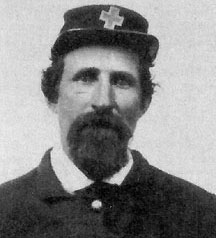

|

NAME: Alexander Gordon Rainier
BORN: 1820
DIED: 1894
ALLEGIANCE: Union
HIGHEST RANK: Private
UNIT: 1st New Jersey Volunteer Infantry; 4th New Jersey
Volunteer Infantry
RECORD: Enlisted April 27, 1861, in the 1st New
Jersey Volunteer Infantry. Served in the defenses of
Washington, D.C., during the winter of 1861-1862. Fought in
Siege of Yorktown, April-May 1862; Seven Days' Battles, June
1862; Antietam, September 1862; Chancellorsville, May 1863;
Gettysburg, July 1863. Wounded at Wilderness, May
1864, and mustered out June 1864. Enlisted in 4th New Jersey
Volunteer Infantry in November 1864. Participated in Siege
of Petersburg, December 1864-April 1865. Mustered out July
15, 1865.
|
|
When Civil War broke out in 1861, Alexander Gordon Rainier
was living in Salem, New Jersey. On April 27, five days shy
of his 41st birthday, the tailor, husband, and father of six
enlisted in the 1st New Jersey Volunteer Infantry. It would
be four long years before he would return to the bosom of
his family.
The 1st New Jersey left Trenton's Camp Olden for Washington,
D.C., on June 28, 1861. A month later, Rainier's regiment
helped cover the Union troops' retreat after the First
Battle of Bull Run in Virginia. In August, the unit merged
with three other Garden State regiments to form the 1st New
Jersey Brigade, commanded by Brigadier General Philip
Kearney.
Along with the rest of his brigade, Rainier participated in
many of the major battles of 1862 and 1863, including the
Seven Days' Battles and Chancellorsville in Virginia,
Antietam in Maryland, and Gettysburg in Pennsylvania. After
spending the winter of 1863-1864 at Brandy Station,
Virginia, in May 1864 the brigade marched into Virginia's
Wilderness to join the fierce fighting in the tangled second
growth woods. There, sometime on May 5, Rainier took a
bullet in his side--a wound that would plague him for the
rest of his life.
Rainier's enlistment expired while he was recuperating, but
he wasn't done fighting. In November, he reenlisted in the
4th New Jersey Volunteer Infantry, in which he served
through the end of the war. Following the Siege of
Petersburg, Virginia, which ended in April 1865, Rainier's
regimental commander, Lieutenant Colonel Baldwin Hufty,
commended Rainier for his "bravery in trying to rally his
comrades" during the final attack on the city.
Rainier was mustered out on July 15, 1865, and resumed his
private life. He moved to Danville, Pennsylvania, and
fathered six more children. The former infantryman died on
August 12, 1894, at the age of 74.
Source: Civil War Times Illustrated
42:2 (June 2003), 20.
|